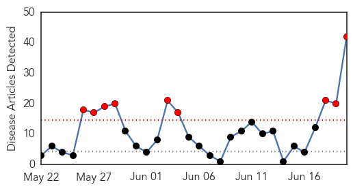
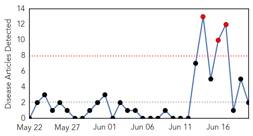
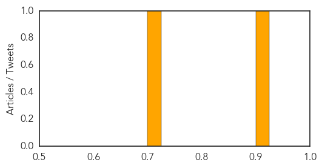

Ebola
30-Day Web Trend
9 alerts, 0 warnings

30-Day Twitter Trend
0 alerts, 0 warnings

Article Locations

Article Confidences

Top Articles:
- 1.000
- Eight Now Dead from Ebola Virus in Liberia's Capital
- 1.000
- West Africa Is 'Overwhelmed' By Ebola
- 1.000
- Liberia Works to Contain New Ebola Outbreak Amid Renewed Fear
- 1.000
- Ebola outbreak in West Africa ‘out of control,’ says MSF
- 1.000
- Ebola outbreak: Virus is 'totally out of control'
- 1.000
- Guinea frets as Ebola virus spreads; death toll
- 1.000
- Ebola In West Africa Is 'Totally Out Of Control,' Medical Group Says
- 1.000
- Ebola: timeline of a ruthless killer
- 1.000
- 'Ebola virus is totally out of control', medics warn
- 1.000
- Ebola called 'out of control' in West Africa
- 1.000
- Ebola called 'out of control' in West Africa
- 1.000
- Ebola outbreak in West Africa 'out of control'
- 1.000
- Australian doctor fights virus
- 1.000
- West Africa ebola pandemic escalates with Sierra Leone deaths
- 1.000
- Doctors Aren't Sure How To Stop Africa's Deadliest Ebola Outbreak
- 1.000
- Doctors Without Borders: Ebola ‘out of control’
- 0.999
- Ebola Outbreak In West Africa Growing Out Of Control, Health Officials Warn
- 0.999
- West Africa Ebola Outbreak 'Out of Control'
- 0.999
- Ebola outbreak in W.Africa ‘totally out of control’ – MSF — RT News
- 0.999
- Ebola’s Deadly Nature is Up Close and Personal
- 0.998
- The Ebola outbreak that refuses to die
- 0.998
- Doctors Without Borders: Ebola ‘out of control’ in W. Africa
- 0.997
- West Africa Ebola outbreak is ‘totally out of control,’ more help needed
- 0.996
- Caritas official from Sierra Leone seeks prayers for nations with Ebola
- 0.996
- West Africa #Ebola crisis 'out of control'
- 0.995
- Ebola 'out of control,' Doctors Without Borders warns
- 0.992
- Ebola outbreak ion West Africa 'totally out of control'
- 0.990
- UNICEF-Liberia Ebola Virus Disease: SitRep #26, 20 June 2014 - Liberia
- 0.986
- Massive West African Ebola outbreak 'now in a second wave'
- 0.985
- Article not found
- 0.968
- Africa's Ebola outbreak 'out of control', warns MSF
- 0.956
- Africa Ebola Outbreak is 'Out of Control'
- 0.921
- EBOLA UPDATE FROM AMERICAN EXPERT
- 0.826
- Doctors Without Borders: Ebola ‘out of control’ in West Africa
- 0.787
- Daru Parliamentarian Praises Sylvia Blyden
- 0.782
- U.S. CDC says more lab workers may have been exposed to anthrax
- 0.648
- CDC says more lab workers may have been exposed to anthrax
- 0.624
- U.S. CDC says more lab workers may have been exposed to anthrax
- 0.602
- Anthrax exposure sparks new scrutiny over CDC safety
- 0.575
- Agricultural Services_Home
- 0.520
- Anthrax scare is latest safety lapse at CDC labs
- 0.503
- CDC: more lab workers may have been exposed to anthrax
Top Tweets:
- 0.575
- RT: Ebola 'out of control': Doctors Without Borders | @scoopit http://t.co/fugZI03w6S
- 0.531
- RT: Liberia,Ebola "'hospital closed, we not accepting patients here. All the nurses gone home,' said guard barricaded.." h…
Pertussis
30-Day Web Trend
3 alerts, 0 warnings

30-Day Twitter Trend
0 alerts, 0 warnings

Article Locations
Article Confidences
Top Articles:
Top Tweets:
-
No tweets found for Jun 20, 2014